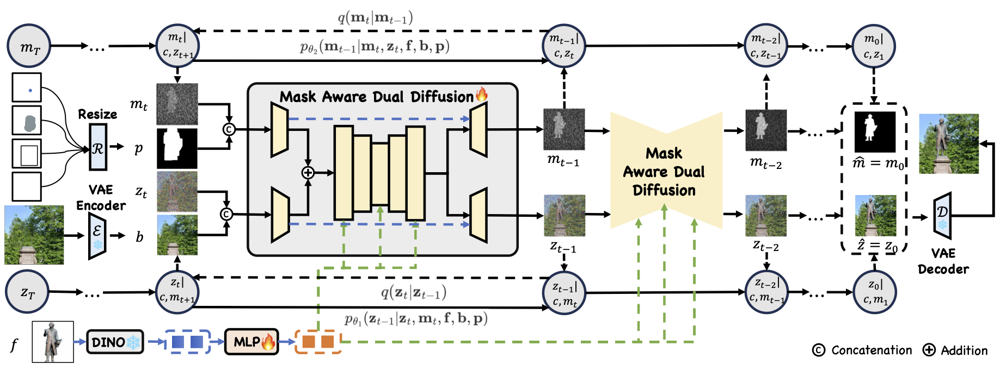
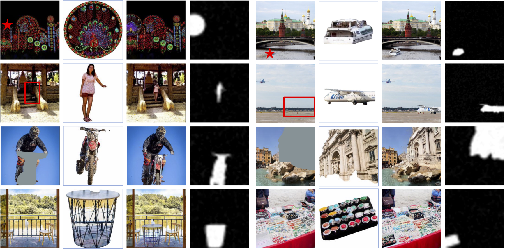

Affordance-aware Insertion

Model Architecture

The framework of Madd. Foreground objects are encoded using a DINOv2 encoder, serving as the guidance signal through the cross-attention mechanism. The position prompt encoder unifies different types of position prompts, which are then concatenated with the latent mask mt. The background is encoded using a VAE encoder and then concatenated with the latent image zt. We use a dual branch structure to denoise RGB image z and object mask m simultaneously.
More Visualization
SAM-FB Test Set
We presents the visualization results on the SAM-FB test set. In each group, the leftmost image depicts the back- ground marked with a position prompt. Our Madd predicts the RGB image and mask of the inserted object, which are shown in the last two images of each group.

In-the-wild Images
Example of in-the-wild insertion results with details. Madd could keep the appearance better and adjust the foreground's properties better compared with different baseline models on both common and uncommon objects. In the last row, Madd generated reasonable insertion when provided ambiguous prompts.